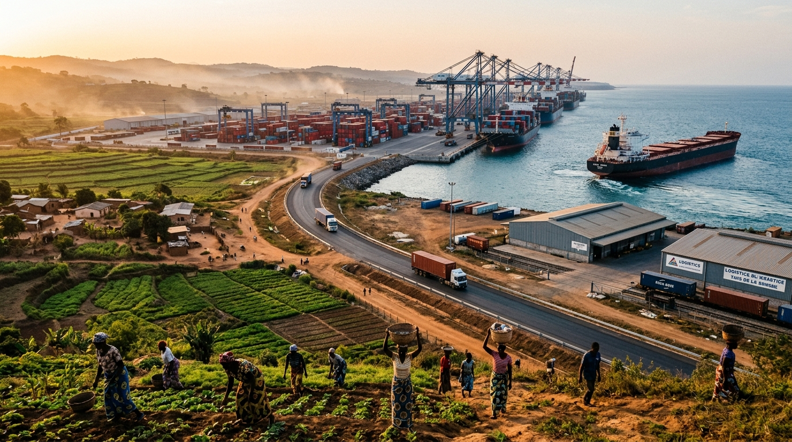
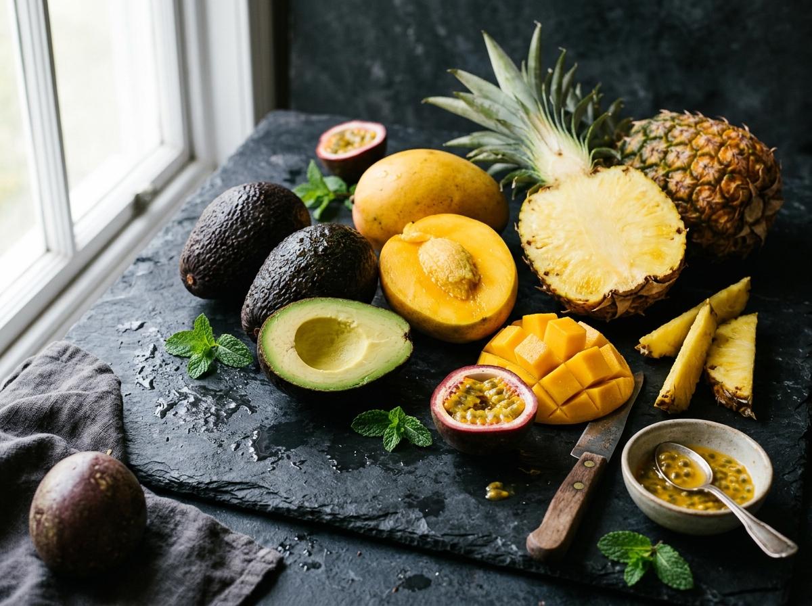
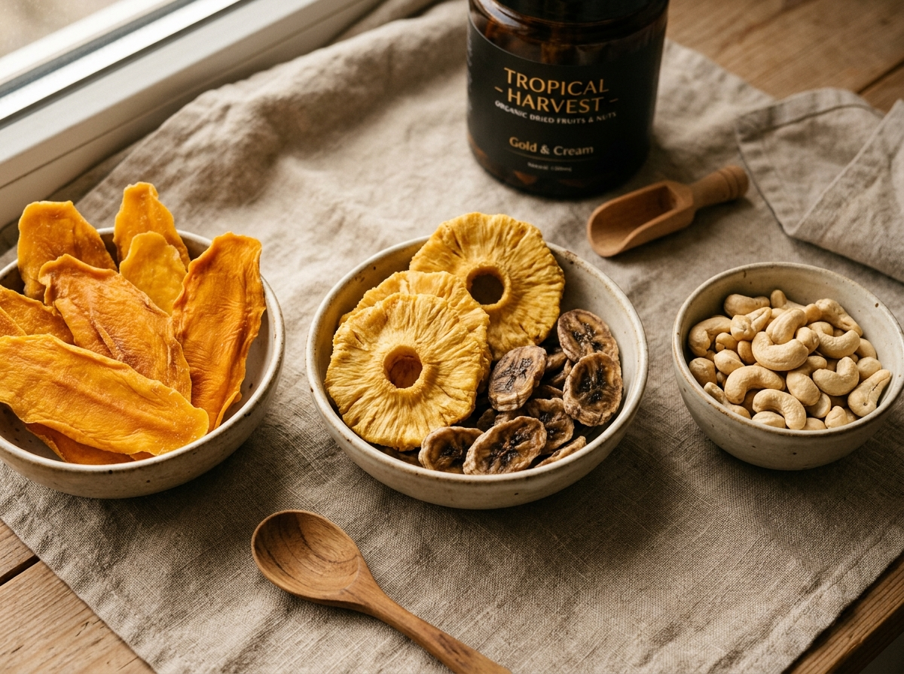
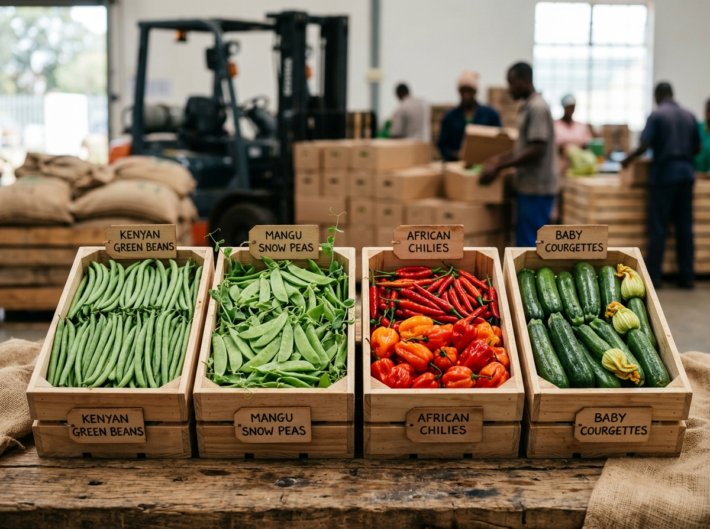
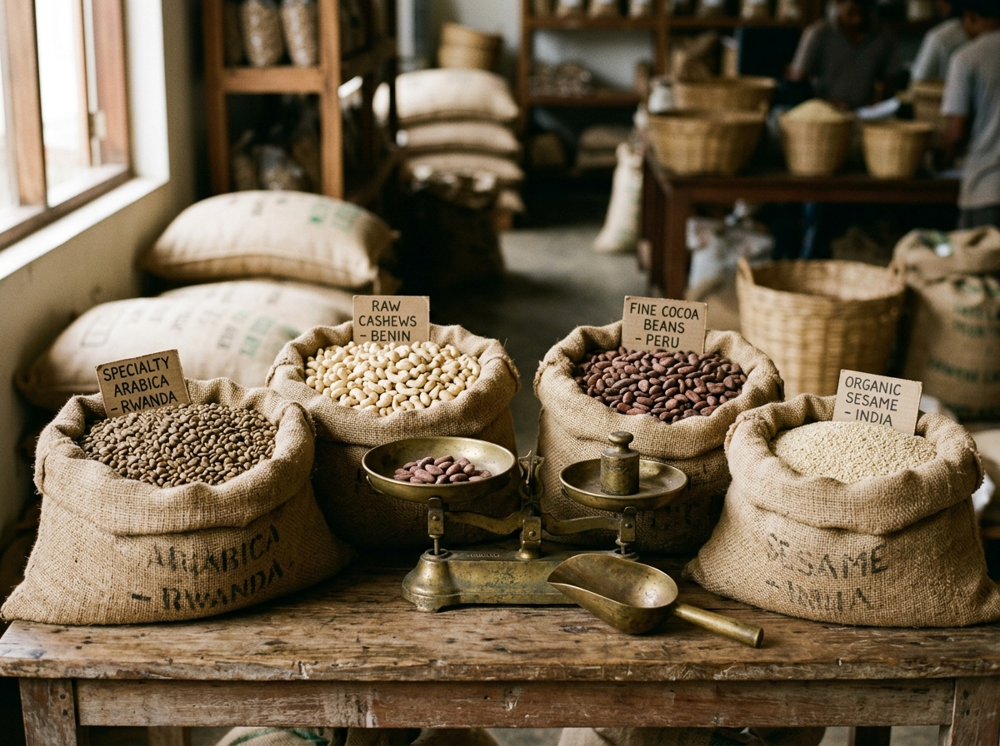
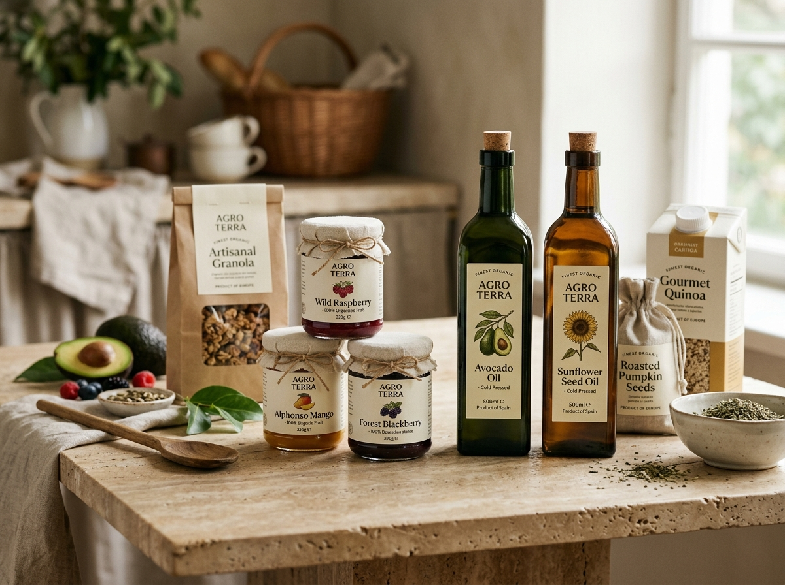
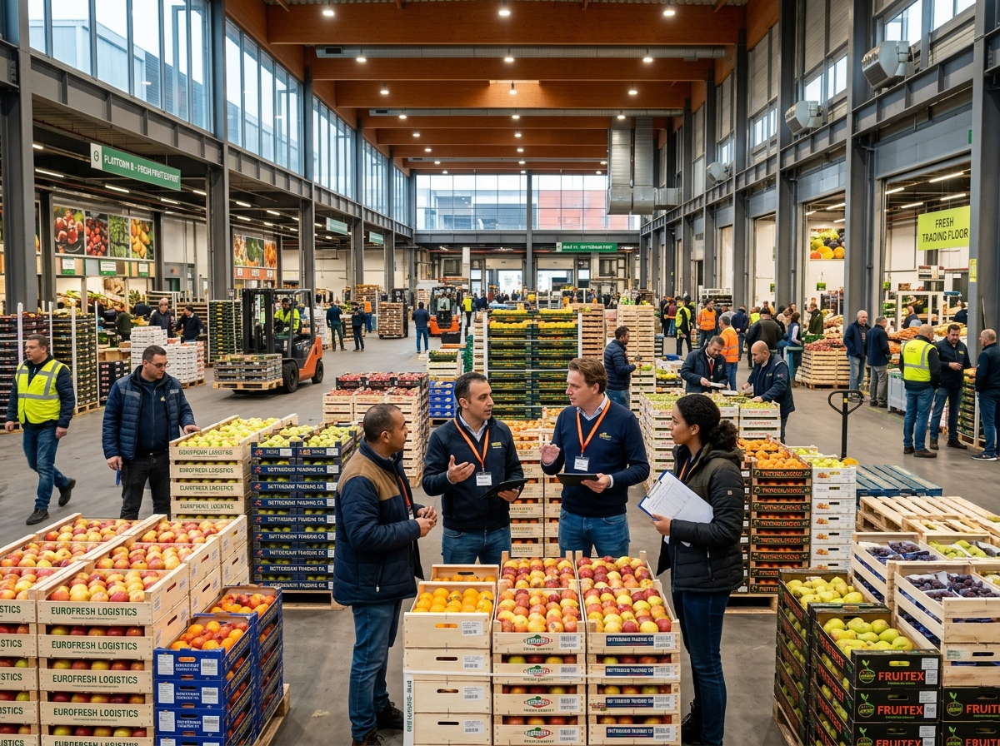

Connecting African agricultural products with European markets through reliable sourcing, trade expertise and trusted partnerships.
Euro Afric Foods connects agricultural producers, exporters and international buyers through structured sourcing, trade and market-access solutions.
An animated view of the structured trade bridge connecting African agricultural harvest directly with European wholesale, retail, and commercial demand.
Direct partnership with verified agricultural cooperatives and commercial growers across Africa.
Rigorous quality grading, phytosanitary inspection, and full EU market compliance audit.
Precision temperature-controlled cold chain, customs processing, and rapid maritime/air logistics.
Direct delivery to European food wholesalers, commercial buyers, and supermarket distributors.
Connecting international demand with agricultural products from reliable origins with verified harvest capabilities.
Supporting structured movement of agricultural and food products across international markets with complete trade documentation.
Connecting African suppliers with European commercial opportunities through direct retail and wholesale trade relationships.
Supporting the journey from source to professional buyers, wholesalers and distributors across Italy and the European continent.

Premium grade avocados, mangoes, passion fruit, and tropical selections harvested at optimal maturity for European buyers.

Naturally sun-dried tropical fruit slices, dried mango, dried pineapple, and high-yield raw and processed cashew nuts.

High-demand horticulture including fine green beans, snow peas, specialty chilies, and tender garden produce.

Specialty raw coffee, cocoa beans, sesame seeds, and bulk agricultural commodities sourced from origin cooperatives.

Cold-pressed organic avocado oils, natural fruit purees, and value-added packaged foods compliant with EU standards.
Reliable international trade requires more than a product. It requires quality, documentation, traceability, communication and dependable execution.
Strict adherence to European sanitary, phytosanitary, pesticide residue limits (MRLs), and official customs clearance protocols.
Transparent chain of custody from individual harvest origin to packaging facility, reefer container, and final bill of lading.
Standardized sizing, grading, brix levels, and pre-shipment laboratory inspections aligned with EU supermarket specifications.
Unbroken cold-chain tracking, strategic carrier bookings, and multimodal transit management into Mediterranean and North Sea ports.
Real-time status updates, proactive harvest schedule forecasts, transparent trade terms, and clear contract execution.
Long-term commercial commitments based on institutional integrity, consistent volume delivery, and shared commercial growth.
Identify and audit suitable agricultural producers, cooperatives, and commercial harvest regions with high supply consistency.
Review laboratory quality parameters, phytosanitary documentation, packaging standards, and EU regulatory compliance.
Align product grading, customized export packaging, pre-cooling schedules, and multi-modal transit bookings.
Coordinate refrigerated shipping, customs processing, bill of lading issuance, and cross-border maritime clearance.
Deliver verified agricultural shipments directly to European wholesalers, distributors, and professional retail buyers.
Establish multi-season volume agreements, repeat commercial orders, and sustainable international trade corridors.
Whether establishing European retail channels or securing reliable African harvest volume, Euro Afric Foods bridges the commercial gap.
"Building connections between African agricultural potential and international market opportunity."
Euro Afric Foods was founded by Nsubunga Isa on the principle that African agricultural producers possess world-class harvest quality, while European markets require unyielding logistical discipline and compliance. By engineering an integrated bridge between origin cooperatives and European distribution networks, Euro Afric Foods enables sustainable, high-volume international trade.
"AFRICA CAN COMPETE.
AFRICA CAN WIN.
BUT ONLY WITH THE RIGHT SYSTEMS."
Positioned in Italy with direct access to Mediterranean maritime corridors, Euro Afric Foods coordinates the precise arrival, customs compliance, and distribution of premium African agriculture into Italy and broader European trading hubs.

Whether you're looking for reliable agricultural supply or seeking access to European markets, start a conversation with Euro Afric Foods.